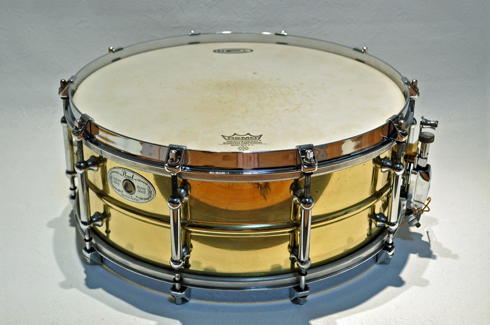

Taste The Music
No.Boundary.For.Your.Soul
Clear or Coated? Thick or Thin? A Guide to Buying Drum Heads
Your choice of drum heads is equally important as your choice of drum kit. Good quality drum heads can completely transform the sound of your kit and you have a plethora of options when buying drum heads. This article will provide you with all the information you need to decide on a set of drum heads that suits your style of play.
BRANDS
Unlike the number of drum kit and cymbal manufacturers, that of highly respected drum head manufacturers is small. While there are a number of good quality local drum head manufacturers (such as Code in the U.K.), the big brands are big for a reason: they make products of the highest standard. The two big drum head manufacturers are Remo and Evans and their catalogues of products are very similar, only the names differ.
THICKNESS
The biggest contribution to a drum head’s tone is its thickness. Heads can be made to a variety of thicknesses or two plies to further increase thickness. The most obvious benefit to thicker heads is their durability, but they also offer a very different tone from that produced by thinner heads. Here is a guide to the strengths and weaknesses of thick and thin heads:
THICK
- More durable
- Louder
- Less sensitive
- More attack
THIN
- Less durable
- Quieter
- More sensitive
- Less attack
DAMPENING
Dampening refers to how the drum’s natural overtones can be controlled. Many drum heads have features designed to dampen the drum without having to apply additional dampening, such as tape or gel. Remo Pinstripe heads are 2-ply heads that are glued together at the edges with a thick plastic. This offers natural dampening and serves a similar purpose to a studio dampening ring. Evans EC2S heads employ the same system. Both Pinstripe and EC2S heads come in a variety of finishes such as clear, coated, and black. Another head with dampening applied is the Remo Controlled Sound head. These heads feature a thick black dot in the middle of the head, which is designed to increase durability and add a natural dampening.
Different drums require different amounts and types of dampening. Bass drums, for example, require dampening to reduce the high end overtones and enhance the low end frequencies produced by the drum. Both Remo and Evans make drum heads with dampening designed specifically for bass drums.
Evans Emad heads feature a foam ring around the edge of the drum head which significantly reduces high end overtones and enhanced the low end muffle of the drum. A good equivalent is the Remo Powersonic head, which on top of the outer foam rings comes with an external dampening pad that can be applied or taken off depending on the musical situation.
RESONANT HEADS
This article has focused primarily on the benefits of using each head on the batter side of the drum (the side you hit), but the resonant side (the side you don't hit) plays an important role in determining the overall tone of the drum. For a wetter, more resonant sound, I'd recommend a medium weight clear head such as a Remo Ambassador or an Evans G1. For a dryer resonance, I'd recommend using medium weight coated heads or dampened heads such as Remo Pinstripe or Evans EC2S.
FINAL THOUGHTS
I personally use Remo Coated Ambassadors on the batter side of my snare and toms with clear Ambassadors on the resonant side. For my bass drum I use a clear Ambassador on the batter side with a Remo Fiberskyn on the resonant side. However I apply felt dampening strips to the inside of my bass drum heads to dampen the high end overtones in a similar way as an Evans EMAD or a Remo Powersonic. You may go through a lot of drum heads before you decide which heads are for you. So, be patient and enjoy the process.